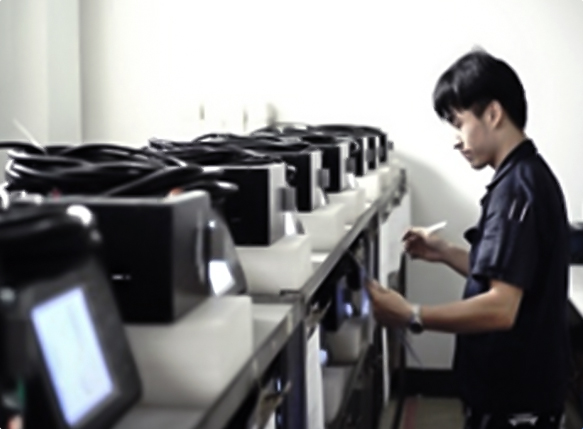

企业简介
company profile
浙江浙大鸣泉科技有限公司是一家以浙江大学为主体的股份制企业。
公司成立于2002年10月，以浙江大学动力机械及车辆工程研究所、浙江大学激光生物医学研究所、浙江大学机械电子控制工程研究所为技术依托，专门面向大气环境监测和机动车环保、安全检测领域，从事环保监测和机动车检测产品研发的国家级高新技术企业，荣获省级、市级奖项10余项，承担国家级重大科研项目5项，省、市级项目20余项，获国家、省、市、区政府奖励、资助项目20余项；获得发明专利、实用新型专利、外观设计专利及商标、软件著作权等知识产权证书70余项；研发技术能力均处于国内外领先水平。 公司与浙江大学共建工程硕士站和省级高新技术企业研发中心—浙江大学·鸣泉科技环保监测研发中心，中心由杰出的博士生导师和教授级科技人才带领，在研人员52人，其中博士生导师8人、教授8人、博士9人，硕士10人，为科研转化为生产力做出了良好的示范。 公司以实现产品网络化、智能化和科技创新为己任，很好地运用多方位、多层次雄厚的技术力量服务于社会，承担和参与国家、地方以及行业标准制定，致力于为中国环保监测和机动车检测做出贡献。
-
20年
公司成立于2002年10月
-
20+
获国家、省、市资助项目20余项
-
70+
荣获知识产权70余项
